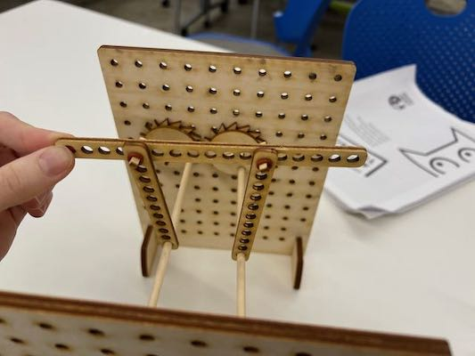
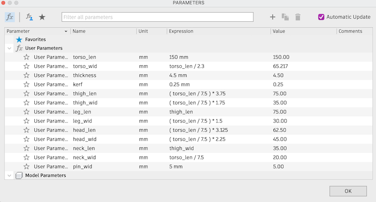
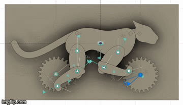

<div class="textcontainer">
<p class="margin"> </p>
<h3>Week 3: Hand Tools and Fabrication</h3>
<p class="margin"> </p>
<div class="flexrow">
<a id="btn" href="./week3.zip" download>Download my CAD files from this week!
</a>
</div>
<p class="margin"> </p>
<h4>Kinetic Sculpture</h4>
It took me a little bit to figure out what I wanted to make this week, but I was
thinking about cyclical motion and thought about creating a sculpture that would
showcase a walk cycle (like in animation). Specifically, I researched gifs of
big cats jumping, and decided to make a sculpture of a panther. My original plan,
and what I still hope to make eventually, was to have a four-legged panther where
all four legs and the torso would be driven by a gear system (the torso would
pivot up and down to make the motion more realistic). I started by
modeling my sculpture with the kits we used in lab:
<p class="margin"> </p>
<div class="flexrow">

</div>
<p class="caption">A photo of the prototype I made in lab.</p>
Then I started modeling things in Fusion. As expected, I ran into some trouble
modeling the curves for the panther itself, but I managed to make the process
relatively smooth by drawing out the parts separately, figuring out bounding box
dimensions, and then setting points along the curve with specified distances from
the limits of the bounding box. That way, I was able to put all my measurements
into Fusion as parameters, so my model can be re-sized relatively easily.
<p class="margin"> </p>
<div class="flexrow">

</div>
<p class="caption">The parameters of my panther.</p>
I spent a few hours putting together a first prototype, which didn't really work
but did help me figure out more of the practical considerations for future
iterations. One aspect in particular that didn't work at all was that I had
made the entire thing out of cardboard, including the gears, which got chewed up
when I tried to drive them with my motor.
<p class="margin"> </p>
<div class="flexrow">
<img src="./IMG_4505.jpeg" alt="">
</div>
<p class="caption">The first prototype.</p>
From there, it was back to the drawing board for a bit. I went back into Fusion
and followed a tutorial to learn how joints work, so that I could model my
panther in Fusion to make sure what I was envisioning was possible:
<p class="margin"> </p>
<div class="flexrow">

</div>
<p class="caption">The main motion I intended to have in my sculpture.</p>
After that, I went back to the lab and drafted a second version of all of my
pieces. I increased the size of the sculpture a little, added a new gear system,
and took out the translation rods from the gears to the feet. At this point, I
was just focusing on the motion of the feet, without the additional torso
movement.
</div>